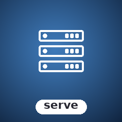

CandyServe
Self-hostable Git server over SSH + Git + HTTP

Self-hostable Git server with SSH (authorized keys), Git (git://), and HTTP endpoints. Users, repos, access control, and optional LFS — all driven by a config file.
Install
composer require sugarcraft/candy-serveQuickstart
use SugarCraft\Serve\{AccessControl, Config, Repo, User};
use SugarCraft\Serve\Git\GitDaemon;
$config = Config::fromDefaults(); // CANDY_SERVE_* env vars, else defaults
// (Config::load($yamlPath) reads a config file)
// Describe a repository and create it as a bare git repo on disk
$repo = Repo::new('my-project', $config->reposPath() . '/my-project.git')
->withDescription('Greeting service')
->withPublic(true)
->addCollaborator('alice')
->init();
// Ask the permission matrix
$acl = AccessControl::getInstance();
$acl->canWrite(User::new('alice'), $repo); // true (collaborator)
$acl->canWrite(User::new('bob'), $repo); // false
$acl->canRead(null, $repo); // true (public repo, anonymous read)
// Serve it over git:// (blocks; serveAsync() runs on a ReactPHP loop instead)
$daemon = new GitDaemon($config);
$daemon->registerRepo($repo);
$daemon->serve();What's in the box
SSH front end
SSHServer authenticates users by public key and dispatches git upload-pack / receive-pack and the browse commands for each connection it is handed.Git daemon
GitDaemon serves the git:// protocol, blocking with serve() or on a ReactPHP loop with serveAsync().HTTP smart protocol
HttpSmartProtocol\Server handles smart-HTTP clone/fetch/push, with Basic auth when required.Access control
AccessControl answers read / write / admin for a user (or anonymous) against a repo's visibility and collaborators.LFS supportGit LFS over HTTP through
LFSHandler and a pluggable storage backend.Config fileYAML server configuration via
Config::load(), or env + defaults via Config::fromDefaults().Source & demos
- Source on GitHub
- Full README
- Runnable examples
- Port of charmbracelet/soft-serve (Go upstream)
API
| Class | Method | Description |
|---|---|---|
| Config | static fromDefaults() / static load(path) | Configuration from env + defaults, or from a YAML file |
| Config | reposPath() / sshPath() / dbPath() / lfsPath() | Data directories |
| Repo | static new(name, path) / withDescription() / withPublic() / withPrivate() / withVisibility() / withAllowPush() / addCollaborator() | Immutable repository description |
| Repo | init() / path() / branches() | Create the bare repository; inspect it |
| User | static new(username) / withAdmin() / withAuthorizedKeys() / addAuthorizedKey() | Immutable user account with SSH keys |
| AccessControl | static getInstance() / canRead() / canWrite() / canAdmin() | Permission checks |
| SSHServer | __construct(Config) / registerUser() / registerRepo() / handleConnection(stream, username, command, publicKey) | SSH command dispatcher |
| GitDaemon | __construct(Config) / registerRepo() / serve(pidFile) / serveAsync(loop, pidFile) / shutdown() | git:// protocol daemon |
| HttpSmartProtocol\Server | __construct(Config) / registerRepo() / registerUser() / handleRequest(…) | Smart-HTTP endpoint |